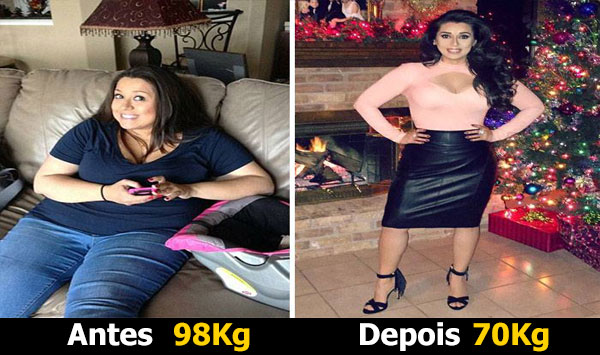

Como muitas mulheres, a médica Teresa Almeida nunca teve problemas com a balança até passar por sua primeira gravidez. Depois que sua filha nasceu, a médica de 31 anos nunca conseguiu voltar ao peso normal.
Teresa, que usava tamanho 50 e chegou a pesar 94Kg, tentou de tudo. Fez a dieta Atkins, cetogênica, do tipo sanguíneo, da proteína, low carb e muitas outras. Nada parecia funcionar, e por ter que cuidar da sua filha, trabalhar fora e manter a casa da família, não sobrava muito tempo para fazer exercícios.
Depois de tanta frustração, Teresa já estava começando a aceitar o fato de que iria ter que conviver com o excesso de peso a vida toda. Foi quando ela viu uma matéria no programa “É de Casa”, que falava de casos exatamente como o dela: de mulheres que vinham lutando contra o seu peso, e pareciam nunca conseguir vencer.
Nessa mesma matéria, porém, algumas mulheres afirmavam que conseguiram contornar o problema com um novo suplemento chamado TestoBoost. Uma das entrevistadas do programa, a Ex-BBB Cacau, admitiu que passou a consumir TestoBoost por recomendação de sua nutricionista, e acabou emagrecendo 12kg em pouco tempo. Cacau até gravou um video para seu canal no Youtube falando sobre o TestoBoost:
 Fonte: Canal da Ex-BBB Cacau no Youtube
Fonte: Canal da Ex-BBB Cacau no Youtube
Mesmo ainda estando um pouco cética, Teresa pensou que não tinha nada a perder e resolveu tentar o TestoBoost também. O marido dela deveria ser enviado de volta para o Brasil dentro de 4 meses, e ela ainda continuava com 94kg, bem longe dos 78kg que tinha antes de engravidar.
Para a sua surpresa, essa decisão mudou sua vida. Após consumir esse suplemento concentrado, Teresa diminuiu 4 tamanhos do manequim, e emagreceu 16 kilos.
CLIQUE AQUI para saber mais sobre o TestoBoost
Antes, Teresa se considerava uma pessoa triste. "Não me arrumava, não usava batom, não tinha maquiagem e nem passava perfume. Via outras pessoas fazendo exercícios e sentia raiva de mim, me perguntava por que todo mundo conseguia e eu não". Agora, Teresa é outra pessoa.
No dia em que chegou ao Brasil, Teresa conta que seu marido não a reconheceu quando lhe viu. Foi apenas por causa da filha do casal que ele percebeu que aquela era a sua esposa, de tanto que ela havia mudado.
"Agora eu sinto prazer e orgulho de me olhar no espelho. Conquistei isso sem nenhum remédio tarja-preta ou cirurgia. Por ser médica, conhecia bem as consequências desses remédios controlados e de uma cirurgia de redução de estômago, principalmente nas minhas condições de saúde na época. Tinha muito medo de algo dar errado e o TestoBoost foi o que acabou me salvando. Com a enorme perda de peso que eu tive, a minha saúde também voltou ao normal.", revelou Teresa.
Atualização (14/10/2017 13h07)Após esta matéria ir ao ar recebemos diversos e-mails de pessoas que fizeram uso do TestoBoost juntamente com a Academia. Todas relataram que conseguiram emagrecer muito mais após iniciar o uso do produto, permitindo até que ficassem menos tempo na academia.
Exclusivo para leitores do NB:

Atualização (09/02/2018 19h45)
Centenas de leitores do sexo masculino tem nos enviado e-mails, perguntando se o TestoBoost também funciona para homens.
Ligamos para o laboratório que produz o suplemento e descobrimos que o TestoBoost funciona da mesma forma em homens e mulheres, diminuindo o apetite, eliminando a compulsão alimentar e derrentendo a gordura.
Este é o caso de Fernando Oliveira, que fez uso do TestoBoost por 3 meses e perdeu 12kg. Vejam a foto de Fernando antes e depois:
Após ler essa história emocionante, nós aqui da revista decidimos investigar mais a respeito do suplemento que Teresa havia utilizado para perder peso. Para isso, nossa equipe entrou em contato com o fabricante de TestoBoost, e com a ajuda da nossa chefe de redação, vamos publicar aqui um teste em primeira mão:
Quando surgiu essa matéria aqui no portal, eu me voluntariei para testar o TestoBoost e escrever um mini-diário sobre minha experiência. Eu já tinha tentado várias dietas que aparecem aqui no site, mas nenhuma tinha me dado um efeito duradouro, sempre acabava recuperando os poucos kilos que perdia. Pra começar a dieta com o TestoBoost, eu fiz o pedido do produto online, paguei em 10x no cartão. O produto chegou em menos de 10 dias na porta da minha casa, já foi um bom começo.
Primeiros dias:
Já nos primeiros dias tomando TestoBoost, fiquei surpresa com os resultados. Meu nível de energia foi lá em cima, e eu já não tinha tanta fome. Um efeito adicional de TestoBoost é o seu poder para conter o apetite e a vontade de comer doces. Mesmo assim, continuei com minha dieta normal, apenas sentia menos vontade de comer do que antes.
Honestamente, eu já me sentia muito bem, mesmo que não perdesse peso, acho que tomaria TestoBoost só pela energia extra que ele me deu. O mais surpreendente é que eu nem tinha mudado nada da minha rotina diária e não estava fazendo exercício. No 7º dia, subi na balança e não pude acreditar no que vi. Eu já tinha perdido 1 kilo! Há muito tempo já vinha tentando diversas dietas, e nenhuma tinha dado tanto resultado assim nos primeiros dias.
Ainda assim, eu não estava estava convencida de que essa dieta ia funcionar, porque dizem que em algumas dietas você perde bastante água no início, e não gordura. Eu queria esperar e ver os resultados nas próximas semanas, mas com certeza já estava bem otimista!
Após 14 dias:
Depois de 2 semanas tomando o suplemento, eu me sentia com ainda mais energia, e estava tendo as melhores noites de sono em anos. Eu já não estava mais acordando durante a noite, e conseguia realmente descansar (acho que é porque meu corpo começou a eliminar as toxinas). Além disso, eu ainda consegui perder mais 1 kilo, totalizando 2 kilos em apenas 10 dias. Eu nunca tinha tido resultados tão rápidos assim em dieta nenhuma na minha vida, e olha que já tentei muitas.
A partir desse ponto, já comecei a acreditar que TestoBoost não era nenhum tipo de engodo, e realmente funciona.
Após 21 dias:
Após 21 dias tomando TestoBoost, já não tenho mais dúvida que ele realmente faz diferença. Resolvi provar algumas roupas antigas que tinha ainda no guarda roupa, e notei que diminuí dois tamanhos de manequim!
Após 35 dias:
Após 5 semanas tomando TestoBoost todos os dias, posso dizer que meus resultados foram impressionantes. Fiquei muito empolgada ao perceber que eu perdia 1kg por semana, totalizando 5kg em 5 semanas, então continuei o tratamento.
Após 4 meses:
Após 4 meses perdi um total de 16 kilos e reduzi 4 números do manequim - tive que gastar um pouco para renovar meu guarda-roupa, mas fiz isso com o maior gosto! Vejam abaixo minha foto de antes de depois:
Muitas meninas aqui da redação também começaram a tomar o TestoBoost quando viram que estava funcionando, e estão tendo resultados semelhantes. Muitas tinham uma história parecida com a minha, viviam fazendo dieta mas nunca conseguiam os resultados que queriam, e pelo jeito dessa vez vai ser diferente.
Marcela Juliana - Antes e depois de TestoBoost.
Depois de terminar o experimento, tirei 2 semanas de férias e não levei o TestoBoost comigo. Achei que talvez pudesse voltar a ganhar peso com a rotina desregrada durante as férias, mas não ganhei nenhum grama! TestoBoost não tem o famoso efeito-sanfona, porque não trabalha acelerando o metabolismo, como outros remédios para emagrecer.
Quando voltei das férias, resolvi continuar tomando TestoBoost, mais pela energia extra que ele me dá, e nem tanto para emagrecer. Estou feliz com meu corpo atual, e tenho mantido meu peso recomendado durante esse tempo todo.
Dificilmente recomendamos algum produto no nosso site ou na revista, mas com as evidências de que funciona e a satisfação garantida, sentimos que nossas leitoras iam gostar da dica. Além disso, a empresa responsável pela venda de TestoBoost no Brasil confia tanto no seu produto, que oferece uma garantia de 100% de satisfação, basta entrar em contato com a empresa caso não estiver satisfeita.
Importante: Segundo o fabricante, TestoBoost só está disponível para compra através da internet, e não é vendido em farmácias ou lojas especializadas. De acordo com a empresa, isso é porque a demanda pelo produto está tão alta, que o pouco estoque que eles têm é vendido em poucas horas através do site.
*Os resultados podem variar de pessoa para pessoa.
.png)